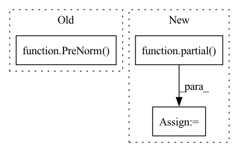

Pattern ID :31776
Before Change
ff = FeedForward(dim, dropout = ff_dropout, glu = ff_glu)
attn = PreNorm(dim, attn)
ff = PreNorm( dim, ff)
layers.append(nn.ModuleList([attn, ff]))
execute_type = ReversibleSequence if reversible else SequentialSequenceAfter Change
assert all([local_heads <= heads for local_heads in n_local_attn_heads]), "number of local attn heads must be less than the maximum number of heads"
layers = nn.ModuleList([])
fn_wrapper = partial( PreNorm, dim)
for ind, local_heads in zip(range(depth), n_local_attn_heads):
attn = SelfAttention(dim, depth, max_seq_len, heads, local_heads, window_size, causal = causal, attn_dropout = attn_dropout, dropout = attn_layer_dropout)
ff = Chunk(ff_chunks, FeedForward(dim, dropout = ff_dropout, glu = ff_glu))In pattern: SUPERPATTERN
Frequency: 3
Non-data size: 3
Instances Fragment ID: 92808863
Project Name: lucidrains/routing-transformer
Commit Name: 1b67a049d33b7d43f3a92bba25627f5bcff09607
Time: 2020-05-23
Author: lucidrains@gmail.com
File Name: routing_transformer/routing_transformer.py
M Class Name: RoutingTransformer
N Class Name: RoutingTransformer
M Method Name: __init__(15)
N Method Name: __init__(13)
M Parent Class: nn.Module
N Parent Class: nn.Module
M File Name: routing_transformer/routing_transformer.py
N File Name: routing_transformer/routing_transformer.py
M Start Line: 430
M End Line: 442
N Start Line: 435
N End Line: 457
Before Change
for _ in range(depth):
self.layers.append(nn.ModuleList([
Residual(PreNorm(dim, Attention(dim, dim_head = dim_head, heads = heads, causal = True))),
Residual(PreNorm( dim, Attention(dim, dim_head = dim_head, heads = heads)) ) if cross_attend else None,
Residual(PreNorm(dim, FeedForward(dim))),
]))
def forward(self, x, context = None, mask = None, context_mask = None):After Change
self.dim = dim
self.layers = nn.ModuleList([])
norm_class = ScaleNorm if use_scalenorm else nn.LayerNorm
prenorm_fn = partial( PreNorm, dim, norm_class = norm_class)
for _ in range(depth):
self.layers.append(nn.ModuleList([
prenorm_fn(Attention(dim, dim_head = dim_head, heads = heads, causal = True)), Fragment ID: 92808865
Project Name: lucidrains/x-transformers
Commit Name: 11a90584ab819e9b975dc3dc85249790e9cb6be6
Time: 2020-11-03
Author: lucidrains@gmail.com
File Name: x_transformers/x_transformers.py
M Class Name: Decoder
N Class Name: Decoder
M Method Name: __init__(8)
N Method Name: __init__(6)
M Parent Class: nn.Module
N Parent Class: nn.Module
M File Name: x_transformers/x_transformers.py
N File Name: x_transformers/x_transformers.py
M Start Line: 116
M End Line: 118
N Start Line: 129
N End Line: 139
Before Change
self.layers = nn.ModuleList([])
for _ in range(depth):
self.layers.append(nn.ModuleList([
Residual(PreNorm( dim, Attention(dim, dim_head = dim_head, heads = heads)) ),
Residual(PreNorm(dim, FeedForward(dim)))
]))
def forward(self, x, context = None, mask = None):After Change
self.dim = dim
self.layers = nn.ModuleList([])
norm_class = ScaleNorm if use_scalenorm else nn.LayerNorm
prenorm_fn = partial( PreNorm, dim, norm_class = norm_class)
for _ in range(depth):
self.layers.append(nn.ModuleList([
prenorm_fn(Attention(dim, dim_head = dim_head, heads = heads)), Fragment ID: 92808867
Project Name: lucidrains/x-transformers
Commit Name: 11a90584ab819e9b975dc3dc85249790e9cb6be6
Time: 2020-11-03
Author: lucidrains@gmail.com
File Name: x_transformers/x_transformers.py
M Class Name: Encoder
N Class Name: Encoder
M Method Name: __init__(7)
N Method Name: __init__(5)
M Parent Class: nn.Module
N Parent Class: nn.Module
M File Name: x_transformers/x_transformers.py
N File Name: x_transformers/x_transformers.py
M Start Line: 100
M End Line: 101
N Start Line: 110
N End Line: 119